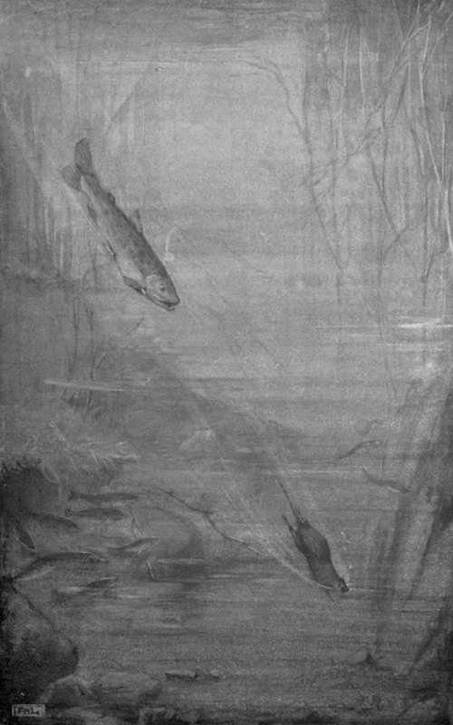

IV. Saved By An Enemy
Description
This section is from the book "Creatures Of The Night: A Book Of Wild Life In Western Britain", by Alfred W. Rees. Also available from Amazon: Creatures Of The Night: A Book Of Wild Life In Western Britain.
IV. Saved By An Enemy
The days were dim and the nights long, and thick, drenching mists hung over the gloomy river. The salmon's family affairs had reached an important stage; and the "redd," furrowed in the gravel by the mated fish, contained thousands of newly deposited eggs. And, as many of the river-folk, from the big trout to the little water-shrew, continually threatened a raid on the spawn, the salmon guarded each approach to the shallows with unremitting vigilance.
It happened, unfortunately for Brighteye, that, while the construction of the " redd" was in progress, some of the eggs— unfertilised and therefore not heavy enough to sink to the bottom of the water—were borne slowly by the current to the ford below the pool, just as the shrew was occupied there in vain attempts to teach the vole how to hunt for insects among the pebbles.
If Brighteye had been at all inclined to vary his diet, he would at that moment have yielded to temptation. Everywhere around him the trout were exhibiting great eagerness, snapping up the delicacies as they drew near, and then moving forward on the scent in the direction of the "redd." The shrew joined in the quest; and Brighteye, full of curiosity, swam beside his playmate in the wake of the hungry trout. The vole found quite a shoal of fish collected near the reeds; and for a few moments he frolicked about the edge of the shallow. He could see nothing of the old male salmon, though he caught a glimpse of the female busy with her maternal duties at the top of the "redd".
After diving up-stream and along by the line of the eager trout, he rose to breathe at the surface, when, suddenly, the river seemed alive with trout scattering in every direction, a great upheaval seemed to part the water, and he himself was gripped by one of his hind-feet and dragged violently down and across to the deep "hover" near his home. The salmon had at last outwitted the vole. The current was strong, and beneath its weight Brighteye's body was bent backwards till his fore-paws rested on the salmon's head. Mad with rage and fright, he clawed and bit at the neck of his captor. Gradually his strength was giving way, and for want of air he was losing consciousness, when, like a living bolt, Lutra, the otter, to save unwittingly a life that she had erstwhile threatened, shot from the darkness of the riverbed, and fixed her teeth in the neck of the salmon scarcely more than an inch from the spot to which the vole held fast in desperation. In the struggle that ensued, and ended only when Lutra had carried her prey to shore, Brighteye, half suffocated and but faintly apprehending what had taken place, was released. Like a cork he rose to the surface, where he lay outstretched and gasping, while the current carried him swiftly to the ford, and thence to the pool beneath the village gardens. Having recovered sufficiently to paddle feebly ashore, he sat for a time in the safe shelter of a rocky ledge, unnoticed by the brown rats as they wandered through the tall, withered grass-clumps high above his hiding place. At last he got the better of his sickness and fright; and, notwithstanding the continued pain of his scarred limbs, he brushed his furry coat and limped homeward just as the dawn was silvering the grey, silent pool where the lonely salmon guarded the "redd" and waited in vain for the return of her absent mate.
Brighteye took to heart his own escape from death, and for several nights moped and pined, ate little, and frequented only a part of the river-bank in proximity to his burrow. As soon, however, as the tiny scars on his leg were healed, he ventured again to the river; and for a period danger seldom threatened him. While he was unceasingly vigilant, and always ready to seek with utmost haste the safety of his home, a new desire to take precautions against the probability of attack possessed him. When, at dusk, he stole out from the upper entrance of his dwelling, he crouched on the grassy ledge at the river's brim and peered into the little bay below. If nothing stirred between the salmon " hover " and the bank, he dropped quietly into the pool, inhaled a long, deep breath, dived beneath the willow-roots, and watched, through the clear depths, each moving fish or swaying stem of river-weed within the range of his vision. But not till, after several visits to his water-entrance, he was perfectly convinced of the absence of danger, did he dare to brave the passage of the pool.
The water-entrance to the vole's burrow was situated about a foot below the summer level of the river, and in a kind of buttress of gravel and soil, which, at its base, sloped abruptly inwards like an arch. This buttress jutted out at the lower corner of a little horse-shoe bay; and hereabouts, during summer, a shoal of minnows had often played, following each other in and out of every nook and cranny beneath the bank, or floating up and flashing in sun-flecked ripples faintly stirred by a breeze that wandered lightly from across the stream.
Ordinarily, Brighteye found that the hole in the perpendicular bank served its purpose well; at the slightest disturbance he could escape thither, and, safe from pursuit, climb the irregular stairway to the hollow chamber above high-water mark. But it was different in times of flood. If he had to flee from the big trout, or from the otter, when the stream rushed madly past his open doorway, he found that an interval, which, however brief, was sufficient to imperil his life, must necessarily elapse before he could secure a foothold in his doorway and lift himself into the dark recess beyond.
Lutra had almost caught him after his adventure with the owl. He had, however, eluded the otter by diving, in the nick of time, from the stone to which he clung before the entrance, and then seeking the land. If he had been an instant later, she would have picked him off, as a bat picks a moth from a lighted window-pane, and he would never have reached the down-stream shallow. At that time the water, clearing after a summer freshet, was fairly low. Brighteye's danger in some wild winter flood would, therefore, be far greater ; so, timorous from his recent experiences, and sufficiently intelligent to devise and carry out plans by which he would secure greater safety, he occupied his spare time in the lengthening nights with driving a second shaft straight inward from the chamber to a roomy natural hollow among the willow-roots, and thence in devious course, to avoid embedded stones, downward to a tiny haven in the angle of the buttress far inside the archway of the bank, where the space was so confined that the otter could not possibly follow him. Even the big trout, in his torpedo-like rush to cut off Brighteye from sure refuge, utterly failed to turn, and then enter the narrow archway, in time to catch the artful vole.
"THE BIG TROUT, IN HIS TORPEDO-LIKE RUSH TO CUT OFF BRIGHTEYE FROM SURE REFUGE." (See p. 105).
[To face p. 104].
The task of digging out the second tunnel was exceedingly arduous ; yet, on its completion, Brighteye, taught by the changes going on around him that months of scarcity were I impending, set to work again about half-way between his sleeping chamber and the upper entrance of the burrow. Here he scratched out a small, semicircular "pocket," which he filled with miscellaneous supplies—seeds of many kinds, a few beech-nuts, hazel-nuts, and acorns, as well as roots of horse-tail grass and fibrous river-weed.
Continue to: